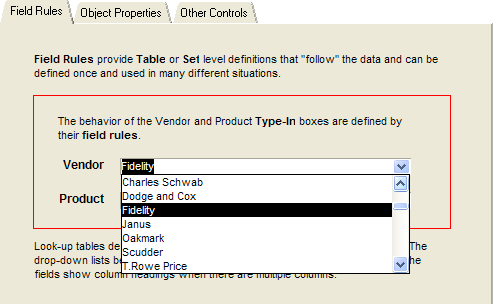
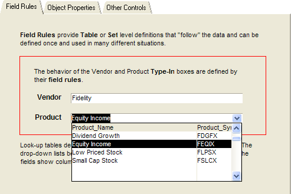

Table Lookups
It is quite common in database application design to present the user with a list of choices. Occasionally, a list is static and hard coded, but often the list is table driven. Sometimes, a list needs to change dynamically, depending on the value of another form object, selection text, or variable. Often the developer will make the list selections more user friendly by presenting an "alias" for an encoded field. This topic explores how to develop these types of lists in Alpha Anywhere.

The form displayed above is based on the Table_Lookup, Vendor, and Product tables. The Table_Lookup table stores references to data in the Vendor and Product tables. Since these references are numbers, it displays associated name fields from the Vendor and Product tables to make the form more readable and usable.
 NOTE : The sample database
illustrated here can be found at Table_Lookups.zip.
NOTE : The sample database
illustrated here can be found at Table_Lookups.zip.

The Table_Lookup table uses Quote_Vendor_No as an index into the Vendor table. It stores the value of Vendor_No in the Quote_Vendor_No field but displays the value of Vendor_Name to represent the data. The Table_Lookup table uses Quote_product_No as an index into the Product table. It stores the value of product_No in the Quote_product_No field but displays the value of product_Name to represent the data.
The objective is to provide something like the following. Select a vendor from the Vendor list.

Then select a product from the Product list that has been dynamically built in response to the Vendor list selection.

Different Development Approaches
Alpha Anywhere provides two approaches to programming the form's Vendor name control to reference one field ( Vendor_No ), display another field ( Vendor_Name ) and store the user selection into a third field ( Quote_Vendor_No ).
Field Rules - by defining a Lookup field rule at the table level.
Object Properties - by defining object properties at the form level.
There are important but subtle differences in the features and benefits between these two different development approaches. Field rules support popup lists. Popup lists provide a powerful set of capabilities to assist the user when the list is long or has multiple columns. The user has the additional capabilities not available through other controls:
Sort any column with a single click.
Search any column for a value or partial value.
Optionally edit any field value.
Optionally add new field values.
Lists based on object properties offer a wider range of control options. The control options fall into two categories:
List and Combo Boxes - populated by static data provided by the developer or by expressions that dynamically query a table or set.
Record Lists - populated with only the data you need to see. For example, if the list contains 100 items, but you only display 10 at a time, local memory only contains those 10 items.
|
|
Advantages |
Disadvantages |
|
Field Rules |
|
|
|
List and Combo Boxes |
|
|
|
Record Lists |
|
|
See Also